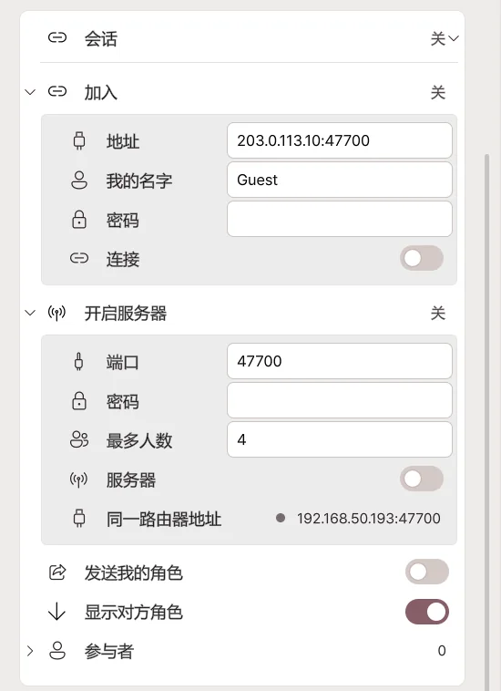
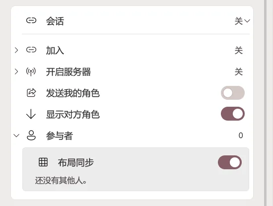
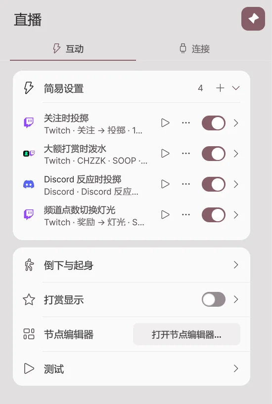
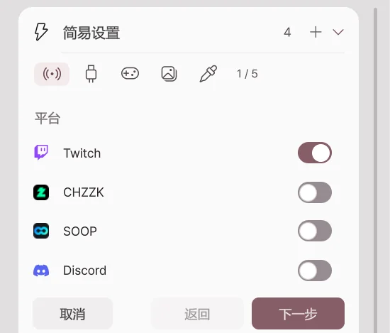
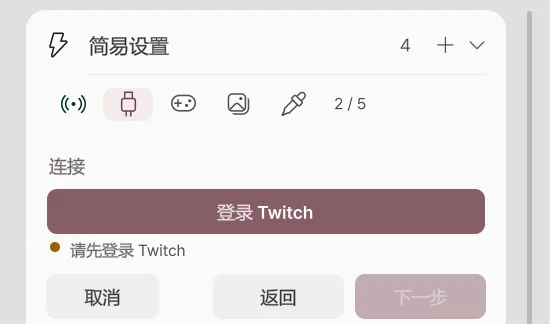
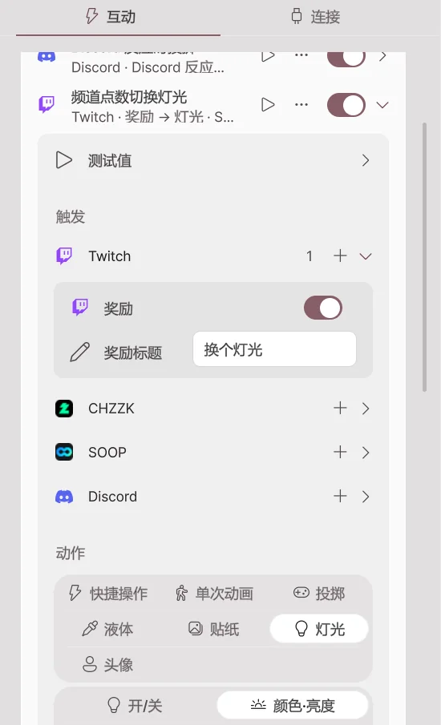
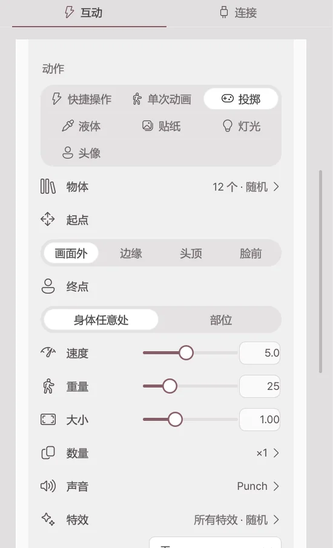

直播
2.2.0 新增功能，2.1.2 及更早版本中没有。
接收 Twitch·CHZZK·SOOP 的观众事件和 Discord 朋友的反应，让角色做出反应。直播联动是 Pro 功能，目前为测试版 (Beta)。在实际直播中遇到问题时，请通过错误报告告诉我们。
直播页面有两个选项卡。
| 选项卡 | 作用 |
|---|---|
| 互动 | 设置事件到来时要做什么。包括简易设置、节点编辑器、倒下·打赏显示·测试。 |
| 连接 | 连接平台账号和 Discord 频道，并开启 WebSocket 与远程联播会话。 |

连接
连接 Twitch · CHZZK · SOOP
- 打开直播 → 连接。
- 打开要连接的平台的开关。
- 在浏览器打开的平台登录页面中，用自己的直播账号登录并允许权限。
- 卡片上显示已连接后，就可以接收事件了。

| 平台 | 可接收的事件 |
|---|---|
| Twitch | 频道积分兑换、聊天、关注、订阅（含赠送·订阅留言）、Bits、突袭、热度列车、悄悄话 |
| CHZZK | 聊天、赞助（聊天赞助·视频赞助）、订阅 |
| SOOP | 聊天、星气球、广告气球、视频气球、贴纸、订阅、礼物 |
关闭开关后不再接收事件。已保存的登录信息和规则不会被删除。开启调试日志后，收到的事件会详细记录在诊断日志中。
Twitch·CHZZK·SOOP 登录会经由 Avatar Live 服务器完成连接。登录信息只保存在你自己的电脑上，服务器不会保留。
连接 Discord
不看直播的朋友，也可以在 Discord 频道里用按钮或 /反应 命令让角色动起来。仅在 Avatar Live 应用运行时有效。

1. 添加 Discord 应用
打开添加 Avatar Live Discord 应用，选择要添加到的位置。应用只请求命令（applications.commands）权限，不会读取消息，也不会管理服务器。
| 添加到 | 适用情况 |
|---|---|
| 添加到服务器 | 在自己的 Discord 服务器频道中使用。需要服务器管理权限。朋友们无需安装任何东西。 |
| 添加到我的账号 | 没有服务器或在群组私信中使用。要在群组私信中直接输入命令，那位朋友也需要把应用添加到自己的账号。没有安装的朋友可以点我发出的按钮。 |
2. 连接频道
- 在应用中打开直播 → 连接 → Discord 开关。
- 点击生成连接码。8 位代码会显示 10 分钟。
- 在要连接的 Discord 频道中选择
/连接命令，在代码栏中填入该代码并发送。 - 应用中弹出“连接 Discord 频道”窗口后，确认服务器和频道名称，然后点击连接。
- 该频道会出现在已连接的频道列表中。
代码只能使用一次。已被他人连接的频道无法连接。
3. 发布反应按钮
- 在已连接的频道中发送
/面板。反应列表中的反应会以按钮形式发出。 - 朋友点击按钮或用
/反应选择反应后，处理该反应的规则就会运行。 - Discord 消息中会显示谁做了什么。
在反应列表中为每个按钮设置名称·表情符号·数值·规则。数值是规则的最小·最大个数条件所看的数。点击规则会依次切换规则，所选规则的 Discord 反应触发会被开启。
Discord 命令
| 命令 | 谁 | 作用 |
|---|---|---|
/连接 代码: |
我 | 把此频道连接到我的 Avatar Live。 |
/断开连接 |
我·服务器管理员 | 断开此频道的连接。 |
/面板 |
我·服务器管理员 | 发出反应按钮。群组私信中也可以。 |
/反应 |
朋友 | 选择一个反应。不选时为第一个反应。 |
/积分 /签到 /赠送 /排行榜 |
朋友 | 查看、收集和分享积分游戏的积分。 |
/轮盘 /老虎机 /高低牌 /二十一点 /对决 /预测 /抽奖 /赛跑 /问答 /首领战 |
朋友 | 积分游戏的小游戏。 |
Discord 客户端语言为英语时，命令也会显示为 /link、/unlink、/panel、/react 等英文名称。
积分游戏的规则和积分数值在 Discord 卡片的积分游戏中设置。积分按频道保存在这台电脑上。
Discord 与应用之间由开发者服务器转发。朋友的 Discord 名称和头像会传到我的应用，用于显示和贴纸。应用不会自行在 Discord 上发帖，只回应朋友的命令。
WebSocket

让其他程序在这台电脑内与 Avatar Live 互相收发事件。默认关闭，端口为 19190。只有同一台电脑上的程序可以通过 ws://127.0.0.1:端口 连接。收发的内容用节点编辑器的 WebSocket 节点处理。
远程联播
将不同电脑上正在活动的角色放到同一个工作室场景中。所有参与者必须使用 Pro，并安装支持远程会话的相同版本。
打开直播 → 连接最下方的会话卡片。由一名房主开启服务器，其他参与者使用房主提供的地址加入。
房主：创建房间

- 展开开启服务器。
- 设置自己的名称、密码和最大人数。
- 打开服务器开关。
- 将连接地址和密码告知参加者。
| 设置 | 作用 |
|---|---|
| 端口 | 用于连接的端口号，默认为 47700。 |
| 最大人数 | 包括房主在内的参加人数上限。 |
| 密码 | 加入房间时必须输入的密码。 |
| 服务器开关 | 打开或关闭房间。关闭后其他参与者也会断开。 |
| 我的地址 | 房主电脑的内网地址。不同家庭的朋友应使用公网地址和端口。 |
如果朋友无法加入，请查看连接故障排查。
参与者：加入房间
- 展开加入。
- 在地址栏输入房主提供的地址:端口。
- 输入自己的名称和房间密码。
- 打开连接开关。首次进入时，请阅读弹出的入场说明并同意一次。
- 检查参与者列表是否显示彼此的名称。
离开时关闭连接开关。
角色显示与布局

| 设置 | 打开或修改后的效果 |
|---|---|
| 与会话共享数据 | 与会话参与者收发角色数据的一个开关。默认关闭。 |
| 单独设置 | 展开后可分别设置显示对方角色、发送我的角色。 |
| 替代角色 | 无法使用对方模型时选择本机角色替代显示。 |
| 布局同步 | 应用房主安排的位置及每个人单独调整的偏移。 |
| 锁定位置 | 房主限制参与者自行修改位置、旋转及大小。 |
| 位置、旋转、大小 | 调整当前选中的参加者布局。 |
| 重新查找 | 在本地文件夹重新查找自己已合法拥有的相同 VRM。 |
你自行调整的远端角色位置可能只对自己的画面生效。多人需要看到相近的排列时，请使用布局同步。
发送角色之前
角色、服装和道具是否允许传输，取决于原作者的使用条款。购买 Pro 或对数据加密，并不等于取得共享许可。禁止再分发的 VRM 不会被传输。
若不允许传输，请保持发送我的角色数据关闭，并使用替代角色。详细责任与权限请参考内容使用条款。
连接故障排查
首先确认房主服务器已开启、地址和端口及密码正确，并且所有参加者使用相同的兼容版本。
另一户家庭的朋友无法连接——端口转发
需要在房主路由器中，将外部连接转发至房主电脑。
- 查看房主电脑的 IPv4 地址。
- 在路由器管理页打开端口转发／端口映射。
- 添加以下规则：
| 设置 | 应填写的值 |
|---|---|
| 内部 IP | 房主电脑的 IPv4 地址 |
| 外部端口 | 47700 |
| 内部端口 | 47700 |
| 协议 | TCP 和 UDP 均需允许 |
如果应用内修改了端口号，应同步修改上述两个端口。外部朋友使用房主路由器的公网 IP 和端口连接。以 192.168 开头的内网地址无法直接从另一家庭连接。
地址与端口正确但没有回应——防火墙
确认 Windows 防火墙允许 Avatar Live 通信。如需手动创建入站规则，应允许会话端口的 TCP 与 UDP。不需要关闭整个防火墙。
如果房主电脑的内网 IP 变了，还需更新路由器的转发目标。使用路由器的 DHCP 地址保留可以减少地址变化。
端口转发及防火墙都正确仍无法连接——路由器与运营商
如果路由器的 WAN 地址为私有地址，或运营商使用 CGNAT，仅设置自己的路由器可能无法实现外网直连。请检查上级路由器或向运营商询问公网 IP 服务。
在同一 Wi-Fi 下通过公网 IP 测试可能因路由器不支持 NAT 回环而失败。请让位于另一网络的朋友进行测试。
会话数据说明
- 由一位参加者的电脑充当房主服务器，并非将角色存储在 Avatar Live 的中央服务。
- 经同意传输的角色数据使用 AES-256-GCM 加密，在房主及接收方电脑上临时缓存。
- 会话结束或退出时，会清除临时缓存并丢弃解密密钥。
- 仅凭加密缓存无法直接提取或恢复原始角色文件。
- 实时姿态、表情和控制消息通过与角色文件不同的路径传输，不具备相同的端到端加密。
- 文件加密传输不会赋予角色、服装或道具的再分发权。
互动
简易设置
简易设置是用一行写出“事件到来时这样反应”的列表。例如有人关注时投掷物体，收到 1 万韩元以上的打赏时向角色泼水。它是直播联动功能，需要 Pro，目前为测试版 (Beta)。
在直播 → 互动的简易设置卡片中创建。

| 行中显示的内容 | 含义 |
|---|---|
| 平台图标 | 此条目接收的平台。 |
| 名称 | 条目名称。最初会自动命名为“规则 1”等。 |
| 触发 → 动作 | 概括对哪个事件做什么。 |
| ▶ | 发送一次模拟事件，立即测试。 |
| ⋯ | 重命名·创建副本·启用/停用·删除菜单。右键点击行也可以打开。 |
| 开关 | 开启或关闭条目。 |
创建新条目
- 点击简易设置卡片的 +。
- 在平台步骤中开启要接收事件的平台。可以同时开启多个。
- 点击下一步。
- 在连接步骤中确认已登录该平台。尚未登录时，用登录按钮连接。
- 在投掷·贴纸·液体步骤中，分别选择要对哪些事件运行。没有选择事件的步骤不会创建。
- 点击创建，条目会添加到列表中。


留空的项目会用默认物体·声音·特效·贴纸文件夹填充，可以直接使用。详细数值可在创建后展开条目修改。
示例
| 想做的事 | 触发 | 动作 |
|---|---|---|
| 有人关注时投掷物体 | Twitch 关注 | 投掷 |
| 1 万韩元以上的打赏时泼水 | CHZZK 赞助，最低金额 10000 | 液体 |
| 星气球 100 个以上时泼水 | SOOP 星气球，最低个数 100 | 液体 |
| 用 Discord 朋友的反应投掷 | Discord 反应 | 投掷 |
| 用频道积分切换灯光 | Twitch 奖励，奖励标题 | 灯光 |
示例条目的动作设置在投掷·液体·倒下中详细说明。
展开条目
点击行右侧的箭头即可展开条目。

触发
触发按平台分组。用平台旁的 + 添加触发，一个条目中可以同时放入多个平台的触发。
| 触发 | 条件 |
|---|---|
| 奖励 (Twitch) | 奖励标题相同的频道积分奖励 |
| 聊天 | 消息中必须包含的文字 |
| Bits·赞助·星气球 | 最低金额·个数，最高金额·个数 |
| 订阅 | 新订阅·续订·赠送订阅 |
| Discord 反应 | 要处理的反应，最小·最大个数 |
| Discord 小游戏结果 | 游戏、仅大奖时、最少获得积分 |
展开测试值，可以设置 ▶ 测试时发送的昵称·金额·消息。
动作

| 动作 | 作用 |
|---|---|
| 快捷操作 | 运行一个快捷操作。 |
| 单次动画 | 播放一次单次动画。 |
| 投掷 | 向角色投掷道具。可以按打赏金额增加数量。 |
| 液体 | 泼洒水·牛奶等液体。 |
| 贴纸 | 把图片贴到角色上。也可以使用观众头像。 |
| 灯光 | 暂时开关灯光，或改变颜色·亮度·效果·预设，在设定的时间后恢复。 |
| 头像 | 关闭追踪、循环舞蹈、暂时摆姿势。 |
由简易设置条目和节点编辑器运行的角色反应。任何角色·相机都可以使用。它是直播联动功能，需要 Pro，目前为测试版 (Beta)。
投掷
把道具库中的物体投向角色。被击中时，角色会在站立状态下被推开，然后回到原位。
| 设置 | 作用 |
|---|---|
| 物体 | 通过缩略图·分类·搜索选择要投掷的物体。选择多个时，每次随机投掷其中一个。 |
| 起点 | 设置从画面外·边缘·头顶·脸前中的哪里飞来。 |
| 终点 | 瞄准身体任意处，或头·胸·手等部位。 |
| 速度·重量·大小 | 设置击中的快慢和力度，以及物体大小。 |
| 数量 | 一次投掷的数量和间隔。开启按金额后，数量会随打赏金额增加。 |
| 声音 | 投出时·命中时的声音。也可以放入自己的声音文件。 |
| 特效 | 命中时显示冲击·闪光·星星·尘土·爱心·水滴·彩纸特效。 |
| 被击中时的表情 | 选择被击中期间的表情。 |
| 更多 | 设置重力·旋转·存在时间·命中后消失·命中后粘住。 |
液体

从水·果汁·牛奶·蜂蜜·史莱姆·墨水·黄金中选择液体种类，泼向角色。液体会从命中处顺着身体流下，角色会暂时显得湿润，然后变干。
| 设置 | 作用 |
|---|---|
| 起点·终点 | 液体流出的位置和瞄准的位置。也可以从脸前泼洒。 |
| 速度·流量 | 设置泼得多猛、多少。 |
| 自动停止·停止前 | 经过设定的时间后停止。关闭后会持续流出，直到关闭规则或连接。 |
| 黏稠度 | 0 像水，1 像糖浆一样流动。 |
| 声音 | 泼洒和流动的声音。 |
| 外观与流动 | 颜色·发光·反射·表面张力等外观数值。无法运行流体的电脑会以简单水滴绘制。 |
| 湿润外观 | 液体碰到的地方显得湿润的外观和变干时间。对所有液体相同，默认 30 秒后变干。 |
贴纸
把自己的图片文件或文件夹（从中随机）、在线图片、动态 GIF·APNG·WebP 贴到角色上。选择观众头像时，会获取发送事件的观众的头像并贴上。
灯光

暂时把一盏灯打开·关闭·反转，或应用颜色·亮度、效果、预设。持续时间结束后会恢复为原来的灯光。持续时间最短为 1 秒。
冷却与按观众限制
| 项目 | 作用 |
|---|---|
| 冷却(秒) | 运行一次后到下一次运行之间等待的时间。 |
| 按观众 | 只对同一观众的事件单独设置冷却。 |
| 删除此规则 | 删除条目。 |
| 在节点编辑器中打开… | 在节点编辑器中打开此条目生成的图。 |
测试与排查问题
- 点击 ▶，无需直播即可测试条目。
- 对实际事件没有反应时，请依次确认平台连接、条目开关、冷却、最低金额。
- 仍然不行时，请查看直播联动无法使用时，并发送错误报告。
倒下与起身

被重重击中或收到击倒动作时，角色会倒在地上，然后慢慢起身。在直播 → 互动 → 倒下与起身中设置。
| 设置 | 作用 |
|---|---|
| 倒下力度 | 倒下时向后推的力度。为 0 时会在原地直接倒下。 |
| 倒地时间 | 起身前躺在地上的时间。用节点击倒时，使用节点的等待时间。 |
| 起身时间 | 从地上起身回到原来姿势所需的时间。为 0 时立即起身。 |
无法倒下的角色在测试时会显示“此角色无法倒下”。
打赏显示

把打赏者的名字和留言以卡片形式显示在场景中的框里。默认关闭。
| 设置 | 作用 |
|---|---|
| 位置 | 像场景中的物体一样移动框并调整大小。 |
| 卡片 | 选择要显示徽章·昵称·留言·金额中的哪些。 |
| 事件 | 要显示的事件：CHZZK 打赏·Twitch 比特·订阅·频道积分。 |
| 堆叠 | 卡片数·显示时间·留言长度·最低金额。 |
| 按金额配色 | 按金额区间改变卡片颜色。 |
| 测试卡片 | 输入昵称·留言·金额，试着添加一张卡片。 |
节点编辑器
用连线连接节点，直接搭建“某个事件到来时，在某个条件下，做什么”。在简易设置不够用时使用。编辑和运行需要 Pro，Basic 中仅可查看、平移和缩放。它是直播联动功能，目前为测试版 (Beta)。
与简易设置有什么不同？
| 简易设置 | 节点编辑器 | |
|---|---|---|
| 制作方法 | 在列表中选择触发和动作。 | 拖放节点并用连线连接。 |
| 能做的事 | 投掷·液体·贴纸·灯光·头像动作等固定反应 | 运算·变量·分支·循环，相机·灯光·表情·BlendShape·骨骼·键盘·鼠标·WebSocket 等约 400 种基本节点 |
| 适合的情况 | 一个事件对应一个反应 | 需要组合多个条件，或按顺序串联多个反应时 |
简易设置的条目在内部也以图运行。展开条目并点击在节点编辑器中打开…，即可查看该条目生成的图。
打开编辑器
- 打开直播 → 互动。
- 点击节点编辑器卡片的打开节点编辑器…。
- 编辑器窗口会在应用内打开。拖动标题可移动，拖动边缘可调整大小。用右上角的按钮放大查看或关闭。
关闭后图仍然保留并继续运行。

| 位置 | 作用 |
|---|---|
| 左上角书本图标 | 显示或隐藏图列表。 |
| 选择图 | 选择要编辑的图。用眼睛图标开启或关闭图。 |
| 右上角网格图标 | 显示或隐藏节点列表。 |
| 图列表下方的按钮 | 添加·删除·复制·重命名图、新建分组，以及 ⋯ 菜单（自动排列、导入·导出）。 |
| 节点列表 | 按分类排列的节点。用 Ctrl+K 搜索，用星标收藏。 |
| 小地图 | 在右下角查看整个图，点击即可跳到该位置。 |
| 撤销·重做 | Ctrl+Z、Ctrl+Y |
新图创建时处于关闭状态。完成后需用眼睛图标开启才会运行。
节点与连线
- 从节点列表把节点拖到画布上即可添加。
- 把节点右侧的点（输出）拖到另一个节点左侧的点（输入）即可连接。
- 流程连线（绿线）表示运行顺序，从 EXIT 连到 ENTER。
- 数值连线（灰线）传递金额·名称等数值。
- 流程和数值不能互相连接。放到无法连接的位置时会显示原因。
- 右键点击节点，会出现删除·复制副本·断开所有连线菜单。
- 没有连线的输入，可以直接在节点内的输入框中填写数值。
示例：1 万韩元以上的打赏时泼水

- 用图列表的 + 新建一个图。
- 从节点列表的 CHZZK 分类中拖出 CHZZK 打赏。收到打赏时，流程从 EXIT 输出，并输出金额（韩元）。
- 从运算与文本分类中放置 整数：A ≥ B，把打赏节点的金额（韩元）连到 A。在 B 中填入 10000。
- 从流程控制分类中放置条件分支。把打赏节点的 EXIT 连到 ENTER，把比较节点的结果连到条件。
- 从互动分类中放置喷洒液体，把条件分支的为真时连到 ENTER。
- 用眼睛图标开启图。
- 在打赏节点的测试金额中填入 15000，点击测试，看看是否泼水。改为 5000 再测试，应该不会泼水。
所有事件节点都有测试栏和测试按钮，无需直播即可测试。图关闭时，测试也不会运行。
在节点编辑器中修改简易设置条目后
- 该条目会显示为“已在节点编辑器中修改”，不再重新生成图。之后由图决定动作。
- 点击条目菜单中的恢复为简易设置，会按条目设置重新生成图。在节点编辑器中修改的内容会丢失。
- 自动生成的图中节点重叠时，请点击 ⋯ 菜单中的自动排列。
分享图
用 ⋯ 菜单的导出到剪贴板把图复制为文本，用从剪贴板导入·从文件导入…载入。导入的图处于关闭状态。别人给的图，请在确认内容后再开启。
测试

在直播 → 互动最下方的测试卡片中，无需规则或事件即可立即测试反应。每个按钮运行一次。
| 按钮 | 作用 |
|---|---|
| 投掷 | 按目标部位·力度·数量投掷物体。未选物体时，从库中随机选择。 |
| 击倒 | 让角色倒下。 |
| 击中 | 展示所选部位被击中的反应一次。开启投掷小物体后，物体也会飞来。 |
| 泼液体 | 设置量和方向（正面朝脸·从上方·从左侧·从右侧）后泼洒。 |
| 贴纸 | 随机贴上一张自己的图片。 |
| 还原 | 清除空中的物体·液体·贴纸，并让角色恢复原来的姿势。 |
Basic 与 Pro
| 功能 | Basic | Pro |
|---|---|---|
| 查看直播页面 | 可以 | 可以 |
| 平台·Discord·WebSocket 连接 | 锁定 | 可以 |
| 简易设置·打赏显示·测试 | 锁定 | 可以 |
| 节点编辑器 | 仅查看·平移·缩放 | 编辑·运行 |
在 Basic 中，已保存的登录信息·规则·图也不会被删除，而是以锁定状态保留。